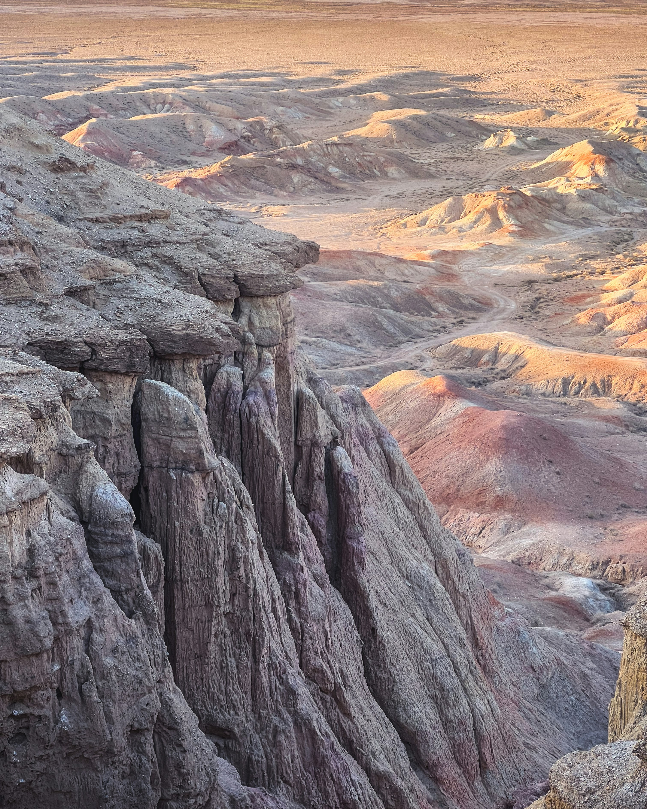
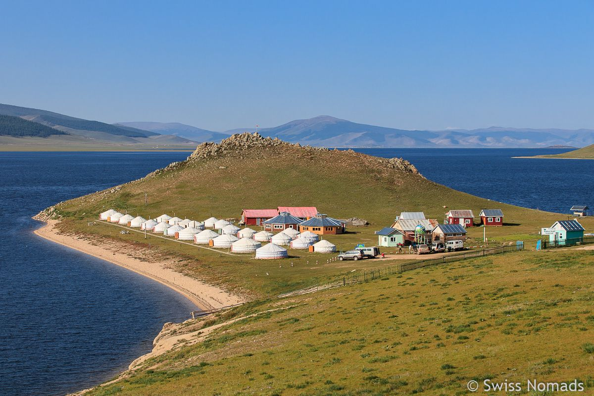
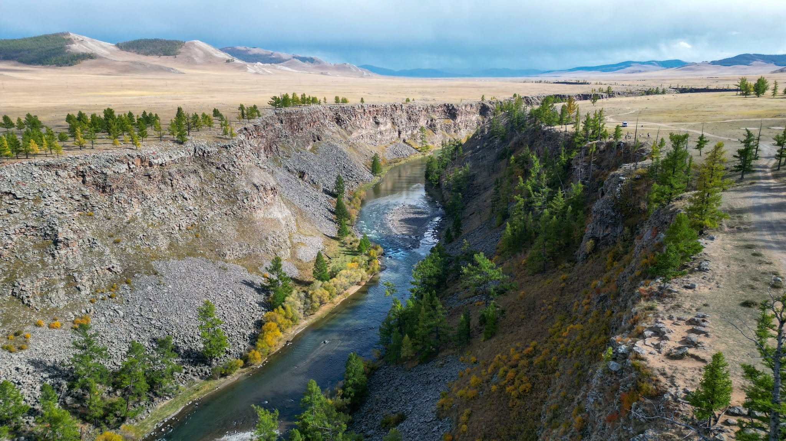

01
RIVERS & CANYONS
Chuluut
Discover the dramatic river scenery and rugged volcanic landscapes associated with the Chuluut region.

From volcanic landscapes and winding rivers to historic landmarks, golden dunes, and endless valleys, discover Mongolia your way.
EXPLORE THE JOURNEY ↓Explore a collection of remarkable Mongolian destinations, from dramatic volcanic formations and rivers to open grasslands, historic sites, and sweeping sand dunes.
This page brings together two different destination groups: the Westerlands and the Kharakhorum journey. Each has its own scenery, character, and places to discover.
Discover rugged scenery, volcanic landscapes, and the quiet beauty of Mongolia's open country. Explore the destinations planned for this journey.

Discover the dramatic river scenery and rugged volcanic landscapes associated with the Chuluut region.

Explore the striking volcanic scenery around Khorgiin Togoo and experience one of Mongolia's distinctive natural landscapes.
Discover the expansive landscapes of the Uvs region, known for its remarkable lake, wide-open scenery, and diverse wilderness.
Follow a different journey through historic Mongolia, rolling grasslands, and beautiful stretches of sand. These destinations form your second tour collection.

Discover the history of Mongolia's former imperial capital and explore the cultural heritage of the surrounding region.
Experience Mongolia's contrasting landscapes among sweeping sand dunes, open countryside, and the changing colors of the desert.

Explore expansive grasslands, river scenery, and the cultural landscapes of the historic Orkhon Valley.
The detailed schedules for both destination groups are still being prepared. Confirmed travel times, daily activities, accommodation, and route details will be added when available.
Choose the journey that interests you and contact our team for more information as tour details become available.
Interested in exploring Mongolia? Get in touch for upcoming tours, availability, and further travel information.
CONTACT US →